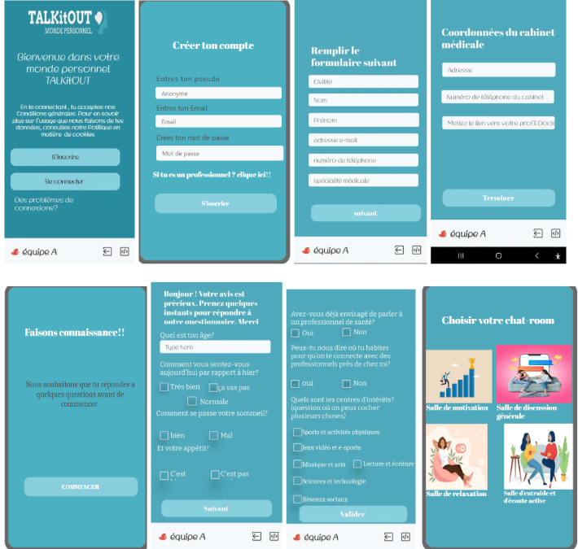

TALKiTOUT

LE PROJET
TALKitOUT est une application mobile innovante conçue pour soutenir la santé mentale des adolescents. Elle offre un espace virtuel sûr pour combattre l'isolement.
IMPACT SOCIAL
Intégrant des techniques de Thérapie Cognitivo-Comportementale (CBT) et de psychologie positive, l'app aide à réduire les symptômes dépressifs.
FONCTIONNALITÉS
- Forums sécurisés : Échanges modérés entre utilisateurs.
- Ressources : Articles et exercices éducatifs.
- Disponibilité 24/7 : Une aide accessible à tout moment.